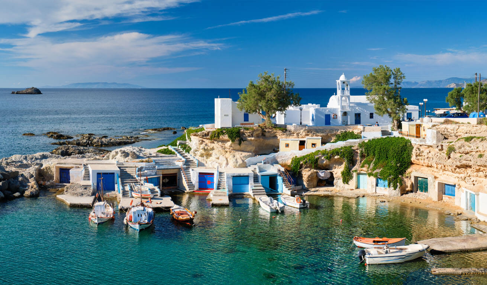

Experiment 02 - Living Impressions
Description
Procedurally generating low-poly scenes of Milos, Greece. The inspiration photo is from Mandrakia, but it could also pass for Klima, Firopotamos, or maybe even a different island.
link to reference image Technical
Quad and custom shapes were used to generate ocean waves, land, and houses
Reflection
I am proud of the innovations and minimalism I approached the project with, but many things were left unfinished and I wish I gave myself more time.